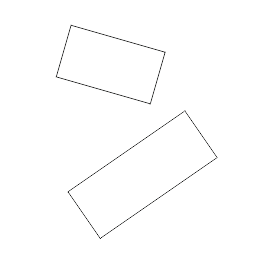

Существует плагин для выравнивания/масштабирования по принципу Автокадовского?
Silvio Manuel / 07.01.2014, 19:22
Форум:
Необходимо выровнять и совместить в кореле две разных растровых подложки (карты) Как это сделать наиболее точно не заморачиваясь с направляющими? В автокаде, кто знает, это выполняется по опорным точкам в три телодвижения пальцем
А чего сложного то? Совмещаем одну точку, на неё перемещаем центр вращения и поворотом совмещаем вторую. Может в Автокаде проще, но и в CorelDRAW тут не нужно сидеть час, достаточно пару движений сделать. Плагина такого не видел, да и для таких простых операций он, имхо, не нужен.
Интересно было бы понаблюдать за вашими действиями.
Например: надо соединить(вровнять) сторону одного прямоугольника (размер, длины сторон, поворот - один),
по стороне другого (размер, длины сторон и поворот - другие). Продемонстрируете своим методом?

Подогнать масштаб, если нужно, тоже не проблема.